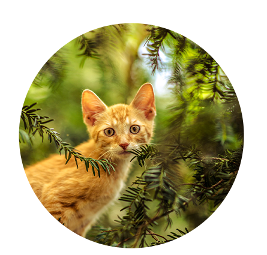
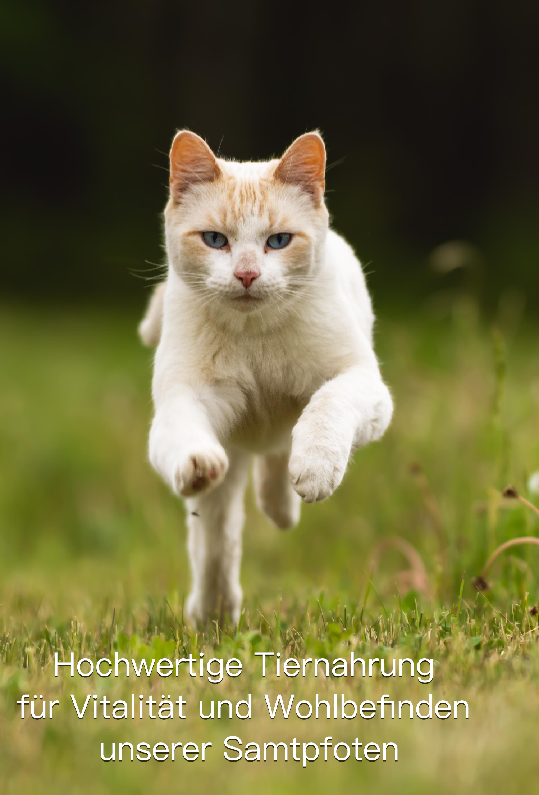
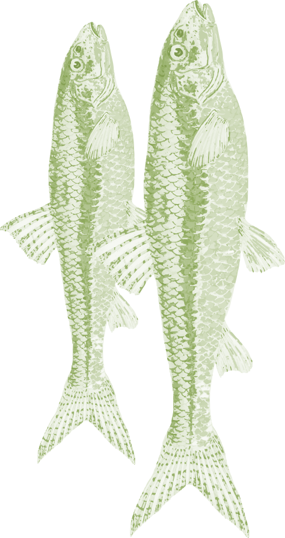
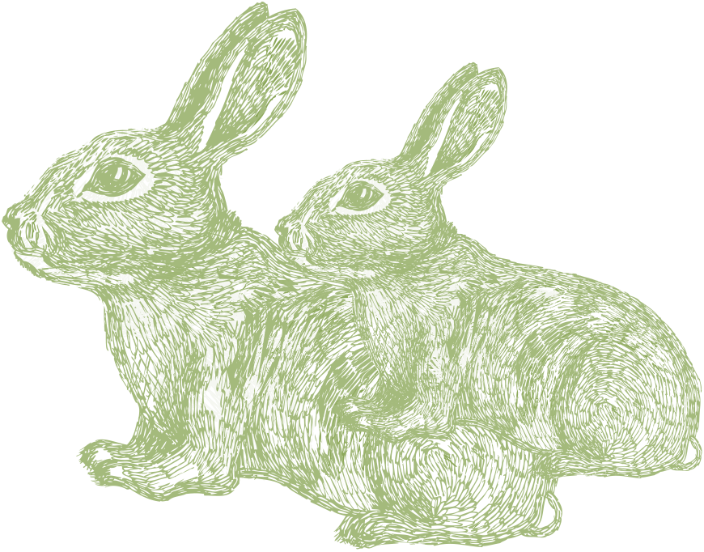
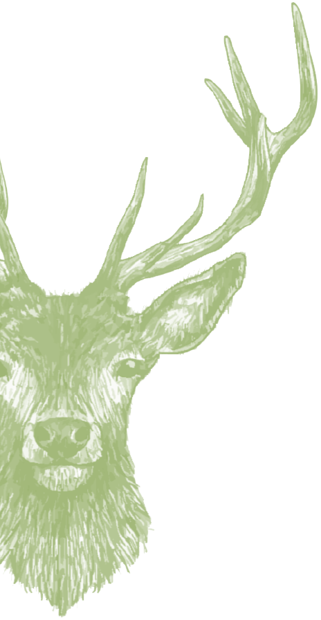

Folge deinen Instinkten. Du bist
hier, weil du dein Haustier
liebst? Du tust alles, um deinem
Lieblingsfamilienmitglied ein
langes, glückliches Leben zu
ermöglichen? Dann können wir
dir mit unseren Produkteneine
ideale Grundlage für das
Wohlbefinden deines
Haustieres anbieten.
Willkommen bei Schmidts
Katze®, einem der führenden
Tiernahrungsunternehmen für
gesunde
Tiernahrung. Der
Anspruch unseres
Unternehmens ist es, ausschließlich Produkte
herzustellen, die dabei helfen,
die Gesundheit
deiner Katze
zu fördern und zu erhalten.


Neben diesen wissenschaftlichen Erkenntnissen ist es für uns als Familienunternehmen selbstverständlich, dass wir nur naturbelassene Zutaten aus regionaler Produktion verwenden.

Umweltfreundlich
Unser Katzenfutter ist 100%
klimaneutral,es wird
zunehmend mit erneuerbaren
Energien hergestellt.Wir
vermeiden lange
Transportwege,deshalb
beziehen wir
bis zu 75% der
Zutaten aus der Region in
Niedersachsen.
Kein Plastik
Wir sind ein Naturliebhaber und
wir sind stolz darauf,dass
unsere Verpackung den Planeten
nicht verletzt.Wir wissen,dass
wir noch nicht perfekt sind.Aber
es ist eine Pfote in die richtige
Richtung.
UNSERE AUFGABE
Wir haben die Mission, das
Leben von Haustieren positiv zu
verändern. Wir glauben, dass
alle Haustiere das
bestmögliche Leben
verdienen - und dies beginnt
mit dem Essen. Wir möchten das
Bedürfnis unserer Haustiere
nach echtem Futter befriedigen.
Wir bleiben bei dem, was
natürlich ist, und halten es
einfach. Und so rein wie
möglich.Folgen wir dem Beispiel
der Natur und geben rohe
Nahrung die frei von
Füllstoffen, Nebenprodukten
und künstlichen
Konservierungsstoffen ist.Wir
möchten Tiernahrung neu
UNSERE ZUTAEN
Echtes frisches Fleisch, Kokosöl,
Apfelessig oder Kurkuma sind
nur einige der Zutaten, die wir
verwenden, um
natürlich

gewonnene Nährstoffe und
Enzyme
bereitzustellen, die zum
allgemeinen Wohlbefinden , zur
lmmun- und
Verdauungsgesundheit,zu
schlanken Muskeln und zu
gesunder Haut und
Gesundheit beitragen.
UNSER PROTEIN
Wenn es um Protein geht,
denken wir,dass die Quelle
wichtig ist. Alle unsere Rezepte
beginnen mit
tierischem
 Eiweiβ - wir glauben, dass dies
die Hauptproteinquelle sein
sollte,
nicht Erbsen oder Kartoffeln.
Tierisches Protein liefert
alle
essentiellen Aminosäuren, die
ein gesundes Haustier benötigt
-etwas, das pflanzliches Protein

UNSER KONZEPT
Unsere Rezepte sind frei von
Getreide , Mais, Weizen und
Soja. Zutaten, die
Nahrungsmittelempfindlichkeiten
verursachen werden von uns
nicht verwendet. Wir glauben 
nicht an die Verwendung von
Füllstoffen - wir denken, dass
jede Zutat einen
ernährungsphysiologischen
und funktionellen Zweck
haben sollte. Da wir der Meinung
sind, dass jede Zutat einen
Zweck haben sollte - und einen,
der für unsere Haustiere
von
Vorteil ist -, entscheiden wir
uns,
keine künstlichen
Farbstoffe in unsere
Lebensmittel aufzunehmen. Wir
bleiben lieber bei dem, was
ganz natürlich ist. Und absolut
notwendig.